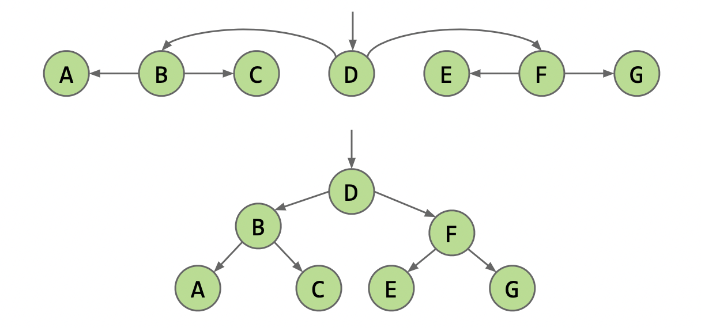

Note: The passage is originally written in Chinese and translated into English via ChatGPT.
Reference: Lecture slides from 19sp.
Trees
First, the concept of abstract data type (ADT) is introduced, followed by a progressive/step-by-step optimization-based introduction to three types of trees (BST, B-Tree, LLRB).
The notes are divided into two parts, and this article only covers ADT and BST.
Abstract Data Types (ADT)
- An abstract data type is defined by its operations, not implementations.
| Hierarchy | Examples |
|---|---|
| ADT | Deque; DisjointSets |
| Implementations of ADT | ArrayDeque, LinkedListDeque; QuickFindDS, WeightedQuickUnionDS |
| Operations of ADT | size(), get(), addFirst(Item x), etc. |
- Among the most important interfaces in the java.util library are those that extend the Collection interface. The relationship is shown in the figure.
- List
- Set
- Map
- The focus this time is on two tree-related data types, TreeSet and TreeMap.
Binary Search Tree
Origins of BST
Question: How can we improve a linked list to perform searches more efficiently?
The answer is: 1) Set the entry point in the middle instead of one end. 2) Traverse from the middle to both ends. 3) Traverse in a skipping manner (as shown in the figure).
Definition and Properties of BST
- A binary search tree is a rooted binary tree with the BST property.
- Tree properties:
- A set of nodes
- One path between any two nodes
- Rooted tree properties:
- Each node, except the root, has only one parent node.
- The root is typically drawn at the top.
- For binary trees, each node can have 0/1/2 child nodes.
- BST properties:
- Ordering: Every key in the left subtree is less than X’s key. Every key in the right subtree is greater than X’s key.
- No duplicate keys are allowed.
- Tree properties:
(Encountering a BST)
BST Operations
Three operations of BST are introduced.
Search / Find
Code Implementation
(It’s easier to understand through the code.) Compare searchKey with T.key –> Found! / searchKey is smaller, search T.left / searchKey is larger, search T.right.
|
|
Runtime Analysis
- Worst-case runtime: $\Theta(\log{N})$ for a dense binary tree.
- Tree height: ~$\log_2{(N)}$
- Consider the fact that each additional level requires twice the number of nodes.
Insert
Code Implementation
|
|
Runtime Analysis for Insertion
It should be the same as the search operation.
Delete
There are three cases for deletion:
- The key to be deleted has no child nodes (–> see “glut,” simply disconnect).
- The key to be deleted has one child node (–> see “flat,” update the parent node’s pointer to the child node).
- The key to be deleted has two child nodes (as shown in the figure, find the predecessor or successor to replace its position).
Code Implementation (p.411)
|
|
Runtime Analysis
It should be of the same order as the previous operations since it only involves additional modification steps.
BSTSet v.s. BSTMap
This part introduces Lab9 BSTmap.
BSTSet and BSTMap have the same structure (a tree), but the difference is that each node is represented using a map (as shown in the figure).